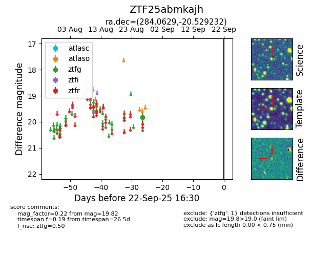

FINK: ZTF25abmkajh
Lasair: ZTF25abmkajh
ALeRCE: ZTF25abmkajh
ZTF25abmkajh (ztf,fink)
equatorial (ra, dec) = (284.0629,-20.52923)
galactic (l, b) = (14.9918,-10.21900)

last ztfg=19.82
1 ztfg detections